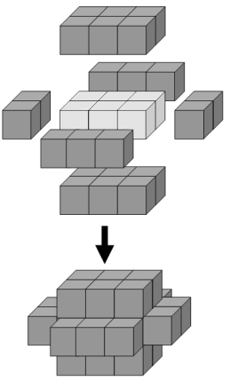

The minimum number of cubes to cover every visible face on a cuboid measuring $3 \times 2 \times 1$ is twenty-two.

If we then add a second layer to this solid it would require forty-six cubes to cover every visible face, the third layer would require seventy-eight cubes, and the fourth layer would require one-hundred and eighteen cubes to cover every visible face.
However, the first layer on a cuboid measuring $5 \times 1 \times 1$ also requires twenty-two cubes; similarly the first layer on cuboids measuring $5 \times 3 \times 1$, $7 \times 2 \times 1$, and $11 \times 1 \times 1$ all contain forty-six cubes.
We shall define $C(n)$ to represent the number of cuboids that contain $n$ cubes in one of its layers. So $C(22) = 2$, $C(46) = 4$, $C(78) = 5$, and $C(118) = 8$.
It turns out that $154$ is the least value of $n$ for which $C(n) = 10$.
Find the least value of $n$ for which $C(n) = 1000$.
solve(target_count=10) → ?solve(target_count=1000) → ?solve(target_count=2000) → ?